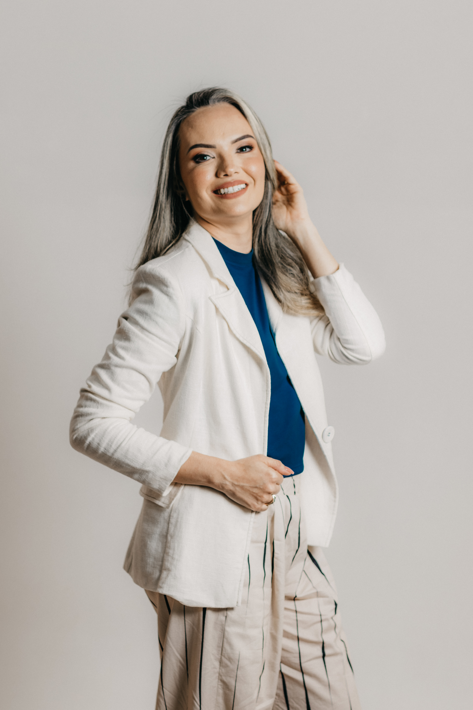
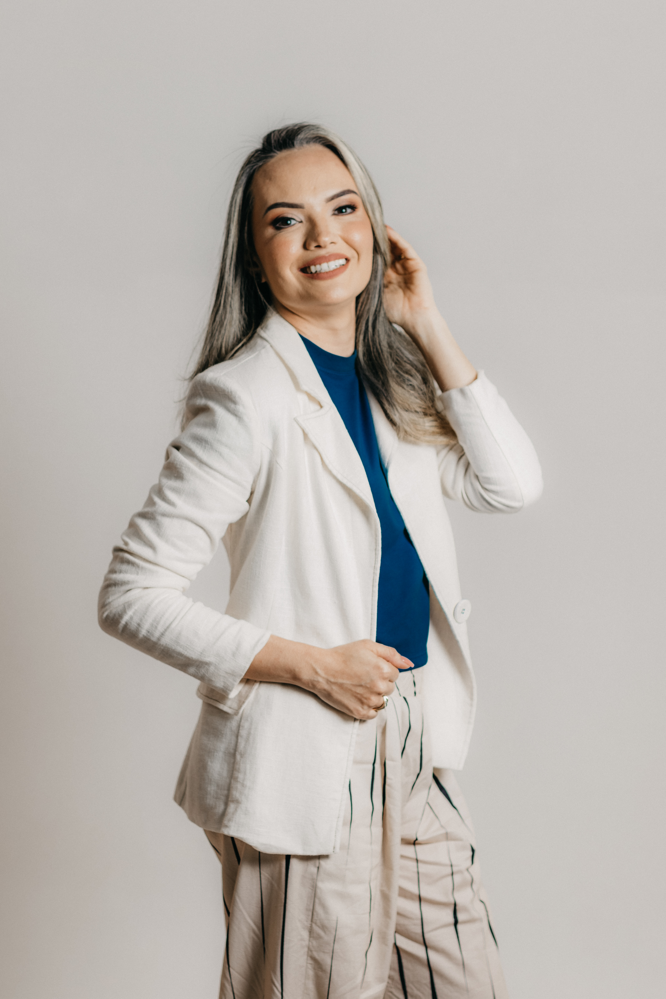
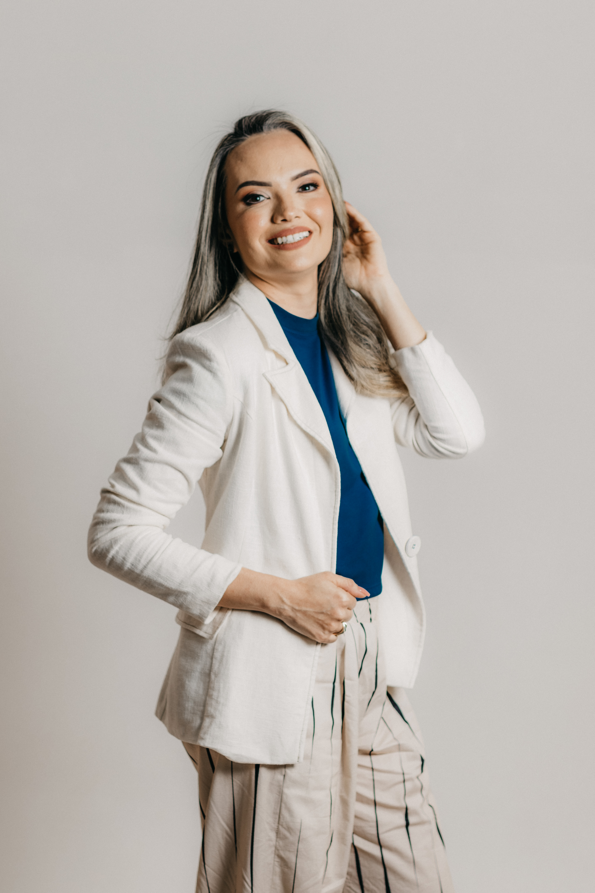
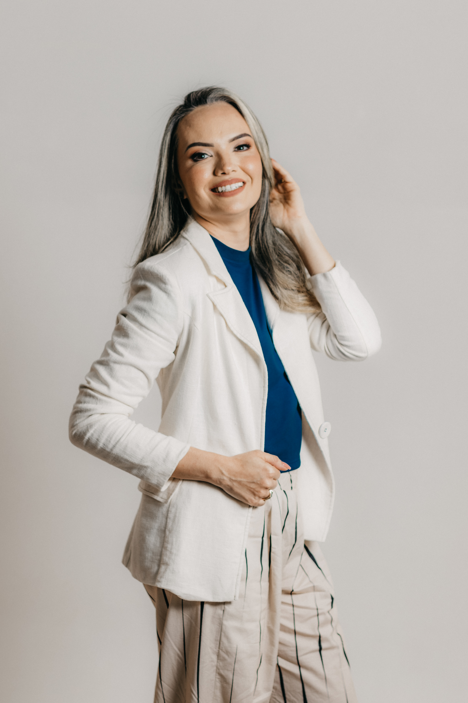

O mnie
 



Nazywam się Beata Stępień i prowadzę terapie dźwiękiem dla dorosłych, dzieci i młodzieży. Posiadam wieloletnie doświadczenie w terapii oraz pracy z dziećmi i młodzeżą, które zawdzięczam również wyjazdom i przeżyciom w krajach, z których pochodźą używane przeze mnie instrumenty.
W mojej ofercie znajdziesz zajęcia dostosowane do moich dużych i małych pacjentów. Od zabaw ruchowych przy muzyce, tańca, aktywności plastycznych z różnego rodzaju dźwiękami, po relaksacje falami dźwiękowymi.
Moja specjalność:
Moją specjalnością jest „kąpiel dźwiękiem” za pomocą gongów. Pochodzące z terenów Azji gongi należą do tej samej grupy instrumentów, co misy – idiofonów. Idiofony to inaczej instrumenty samobrzmiące, które wprawione w rezonans same wytwarzają specyficzny dźwięk. Gong również używany jest w leczniczych „kąpielach dźwiękiem”. Słowo „kąpiel” dobrze oddaje efekt zanurzenia się w wytwarzanych przez nie wibracjach.
Dźwięk, mimo że niewidoczny dla oka, staje się w jakimś sensie materialny, bo odczuwany przez nas głęboko na poziomie cielesnym. Ciało jest „masowane” od wewnątrz.
Podczas takiego masażu jedyne, co musisz robić, to pozwolić sobie na stan relaksacji. Kładziesz się w lekko zaciemnionym pomieszczeniu, układając się w wygodnej dla ciebie pozycji.
Warto przy tym zadbać o odpowiednio ciepłe ubranie lub wyposażyć się w koc – ciało w bezruchu może po prostu ulec wychłodzeniu.
Jeśli ktoś ma problemy z zamknięciem oczu, pomaga materiałowa nakładka z relaksacyjną lawendą.
Serdecznie zapraszam Rodziców i dzieci na wspólne chwile wyciszenia, a w szczególności wszystkie wcześniaki i dzieci z dysfunkcjami.